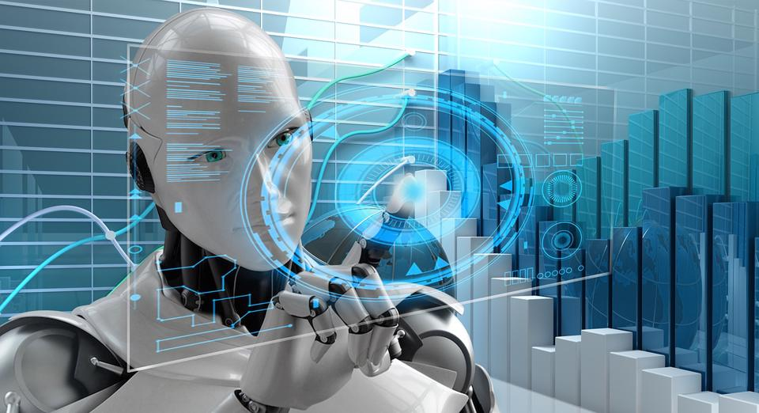

Góp ý
Trí tuệ nhân tạo (AI) sẽ đạt bước phát triển mới
Trong những năm qua, các công ty tài chính và ngân hàng đã đẩy mạnh việc áp dụng AI, giúp cải thiện năng suất, tăng lợi nhuận và mang lại dịch vụ khách hàng đặc biệt. Vào năm 2023, AI sẽ trở thành hiện thực trong các tổ chức. AI không cần mã với các giao diện kéo và thả dễ dàng, sẽ cho phép mọi doanh nghiệp tận dụng sức mạnh để tạo ra các sản phẩm và dịch vụ thông minh hơn.
AI hiện hữu rất nhiều trong cuộc sống của người dùng internet ngày nay. Mỗi khi người dùng mua sắm trực tuyến, tìm kiếm tour du lịch…, các thuật toán thông minh của AI sẽ thực hiện vô số nhiệm vụ và đề xuất các gợi ý thích hợp nhất tới người dùng.

Theo Forbes, xu hướng này cũng đã được ứng dụng trong thị trường bán lẻ. Cụ thể, Stitch Fix (công ty bán lẻ quần áo, nhắm tới đối tượng là những người phụ nữ bận rộn) đã sử dụng các thuật toán được hỗ trợ AI để giới thiệu quần áo phù hợp với kích cỡ và sở thích cho khách hàng.
Ayesha Khanna, đồng sáng lập kiêm Giám đốc điều hành của Addo, một công ty cung cấp giải pháp dữ liệu và AI, dự đoán. “Mặc dù không thay thế con người, nhưng AI sẽ trở thành thành viên mới của nhóm trong nhiều công việc, đóng góp ý tưởng và bản thảo” - Ayesha Khanna nói.
Theo Bernard Marr, một nhà tương lai học cũng dự đoán rằng trong năm nay, trọng tâm của AI là nâng cao năng lực lao động, khi các công cụ mới có sẵn cho phép lực lượng lao động tận dụng AI.